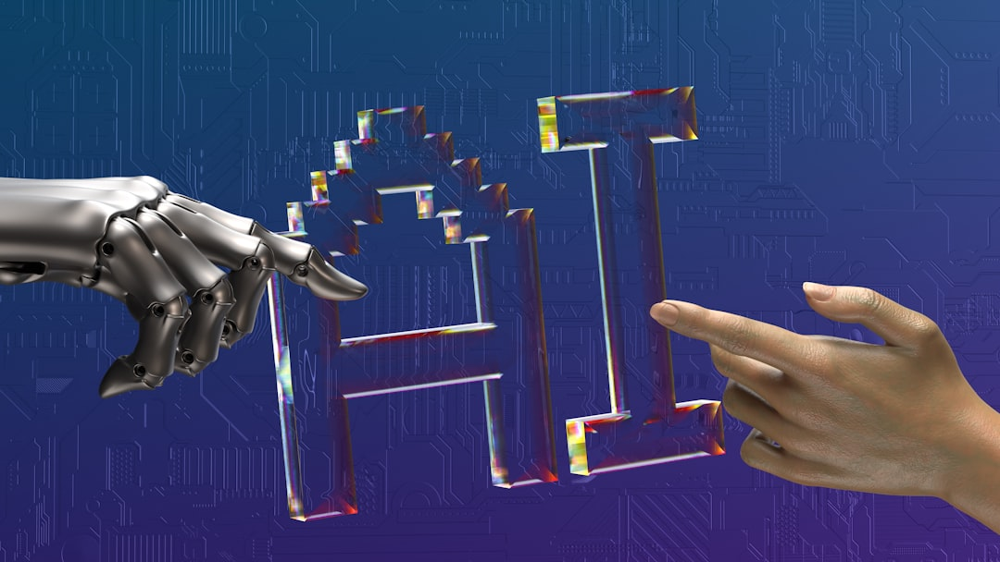

How AI is Reshaping the Cyber Kill Chain: A Complete Guide to AI-Accelerated Threats and Modern Defense Strategies
The cybersecurity landscape is experiencing an unprecedented transformation. Artificial Intelligence, once heralded as the ultimate defender against cyber threats, has become a double-edged sword. While organizations rush to implement AI-powered security solutions, threat actors are simultaneously weaponizing these same technologies to accelerate every stage of the cyber kill chain.

The implications are staggering: reconnaissance that once took weeks now happens in hours, exploitation that required expert knowledge can be automated by novices, and attacks that were previously detectable through traditional signatures now adapt in real-time to evade detection. This isn't a future threat—it's happening right now, and traditional defense strategies are struggling to keep pace.
Understanding the AI-Accelerated Threat Landscape
The integration of AI into offensive cyber operations represents a fundamental shift in how attacks are conceived, planned, and executed. According to recent threat intelligence reports, AI-assisted cyber exploitation is characterized by several key factors that make it particularly dangerous:
The Speed Factor
Traditional cyber attacks followed predictable timelines. Attackers needed time to research targets, manually probe for vulnerabilities, and craft custom exploits. AI has compressed these timelines dramatically. What once took months of preparation can now be accomplished in days or even hours through automated reconnaissance and AI-generated attack tools.
The Scale Problem
AI enables threat actors to operate at unprecedented scale. A single attacker can now manage hundreds of simultaneous campaigns, each tailored to specific targets through AI-generated content and automated exploitation frameworks. This scalability transforms cybercrime from a boutique operation into an industrial process.
The Sophistication Paradox
Perhaps most concerning is how AI lowers the barrier to entry for sophisticated attacks. Previously, advanced persistent threats required teams of skilled professionals. Now, AI-powered tools enable relatively inexperienced attackers to launch campaigns that rival nation-state operations in their sophistication and effectiveness.
Stage 1: AI-Enhanced Reconnaissance - The Digital Dragnet
The reconnaissance phase has been revolutionized by AI's ability to process vast amounts of open-source intelligence (OSINT) and identify attack vectors that human analysts might miss. Modern AI-powered reconnaissance operates like a digital dragnet, capturing and analyzing every piece of publicly available information about a target.
Automated Attack Surface Discovery
AI systems can now scan the entire IPv4 address space in hours, identifying exposed services, misconfigured systems, and vulnerable endpoints across an organization's digital footprint. These tools don't just find what's exposed—they understand the relationships between systems and can map complex organizational architectures automatically.
"AI-assisted reconnaissance reduces the time required for adversaries to identify, weaponize, and exploit vulnerabilities, exposed services, weak identities, insecure APIs, and misconfigured systems." - CERT-In Blueprint
Intelligent OSINT Aggregation
Traditional OSINT collection was labor-intensive and often incomplete. AI changes this by:
- Social Media Mining: AI algorithms analyze social media posts, job listings, and professional networks to build detailed organizational charts and identify key personnel
- Technical Intelligence: Automated analysis of DNS records, SSL certificates, and public code repositories reveals technical infrastructure and potential vulnerabilities
- Relationship Mapping: AI identifies connections between organizations, suppliers, and partners that could serve as attack vectors
- Temporal Analysis: Machine learning models identify patterns in organizational behavior, such as maintenance windows or high-traffic periods that could mask malicious activity
Vulnerability Intelligence Fusion
AI doesn't just find vulnerabilities—it prioritizes them. By correlating vulnerability databases with real-world exploitation data, AI systems can predict which vulnerabilities are most likely to be exploited and in what order. This intelligence fusion creates a roadmap for attackers, showing them the most efficient path through an organization's defenses.

Stage 2: AI-Powered Exploitation - Automated Weaponization
The weaponization and exploitation phases have been fundamentally transformed by AI's ability to generate, adapt, and deploy exploits automatically. This represents perhaps the most significant advancement in offensive cyber capabilities in decades.
Dynamic Exploit Generation
AI systems can now analyze vulnerability details and automatically generate working exploits. These aren't simple proof-of-concept scripts—they're production-ready tools that can:
- Adapt to different target environments automatically
- Incorporate evasion techniques to bypass common defenses
- Chain multiple vulnerabilities together for maximum impact
- Generate polymorphic variants to avoid signature detection
Intelligent Payload Customization
Modern AI-generated malware goes beyond simple obfuscation. These systems create context-aware payloads that:
- Environment Adaptation: Modify behavior based on the target system's configuration and security posture
- Stealth Optimization: Adjust activity patterns to blend with normal system behavior
- Mission Flexibility: Dynamically change objectives based on discovered opportunities
- Self-Preservation: Implement sophisticated anti-analysis and sandbox evasion techniques
Automated Exploit Chaining
Perhaps most concerning is AI's ability to automatically chain exploits together. Instead of relying on human expertise to combine vulnerabilities, AI systems can:
- Identify exploit chains automatically by analyzing system relationships
- Test chain viability in simulated environments before deployment
- Adapt chains in real-time based on defensive responses
- Optimize for specific objectives like persistence, privilege escalation, or data access
Stage 3: AI-Driven Privilege Escalation - Climbing the Digital Ladder
Once initial access is achieved, AI dramatically accelerates the privilege escalation process. Traditional privilege escalation required deep knowledge of operating systems and applications. AI democratizes this expertise while making the process faster and more reliable.
Automated Credential Discovery
AI-powered tools can automatically discover and extract credentials from compromised systems through:
- Memory Analysis: Real-time scanning of system memory for cached credentials and authentication tokens
- Configuration Mining: Intelligent parsing of configuration files, scripts, and databases for embedded credentials
- Behavioral Analysis: Monitoring user and system behavior to identify high-privilege accounts and their usage patterns
- Historical Reconstruction: Analyzing log files and system artifacts to reconstruct authentication patterns and identify privilege escalation opportunities
Intelligent Privilege Mapping
AI systems excel at understanding complex privilege structures and identifying the most efficient escalation paths. They can:
- Map Active Directory relationships automatically
- Identify privilege inheritance patterns
- Discover service accounts with excessive permissions
- Predict which accounts are most likely to have administrative access
Adaptive Escalation Techniques
Modern AI-driven privilege escalation adapts to the target environment, employing different techniques based on system configuration:
- Living-off-the-Land: Using legitimate system tools and processes to avoid detection
- Timing Optimization: Scheduling escalation attempts during periods of high system activity
- Technique Rotation: Cycling through different escalation methods to avoid pattern detection
- Defensive Evasion: Modifying approach based on detected security controls
Stage 4: AI-Enhanced Lateral Movement - The Invisible Spread
Lateral movement has evolved from a manual, noisy process to an automated, stealthy operation. AI enables attackers to move through networks like digital ghosts, adapting their techniques to avoid detection while systematically compromising critical systems.
Network Topology Understanding
AI systems can rapidly map network topologies and understand trust relationships between systems. This intelligence enables:
- Path Optimization: Identifying the shortest route to high-value targets
- Trust Exploitation: Leveraging existing trust relationships to move between systems
- Segmentation Bypass: Finding weaknesses in network segmentation that allow unauthorized movement
- Critical Asset Identification: Automatically identifying domain controllers, database servers, and other high-value systems
Behavioral Mimicry
One of the most sophisticated aspects of AI-enhanced lateral movement is its ability to mimic legitimate user behavior:
- Analyzing normal user patterns and replicating them
- Timing activities to coincide with legitimate business operations
- Using appropriate tools and protocols for each environment
- Maintaining consistent behavioral patterns across compromised accounts
Adaptive Communication Channels
AI-powered lateral movement tools can dynamically select communication methods based on network monitoring and security controls:
- Protocol Selection: Choosing communication protocols that blend with normal traffic
- Encryption Adaptation: Using appropriate encryption methods for different network segments
- Traffic Shaping: Modifying communication patterns to avoid network anomaly detection
- Channel Redundancy: Establishing multiple communication paths for reliability and stealth
Stage 5: AI-Powered Persistence - The Eternal Foothold
Maintaining persistence in modern environments requires sophisticated understanding of system architectures and defensive capabilities. AI transforms persistence from a static implant to a dynamic, adaptive presence that evolves with the target environment.
Multi-Vector Persistence
AI-driven persistence mechanisms establish multiple footholds simultaneously:
- Registry Manipulation: Creating legitimate-looking registry entries that survive system reboots
- Service Installation: Installing services that appear to be legitimate system components
- Scheduled Tasks: Creating tasks that execute at optimal times for stealth and reliability
- Startup Modifications: Modifying startup processes to ensure execution after system restarts
Environmental Adaptation
Modern AI-powered persistence mechanisms adapt to their environment:
- Analyzing system configurations to determine optimal persistence methods
- Monitoring for security tool deployment and adapting accordingly
- Modifying persistence mechanisms based on system updates and changes
- Implementing redundant persistence to ensure survival of defensive actions
Stealth Optimization
AI enables persistence mechanisms that are increasingly difficult to detect:
- Legitimate Process Injection: Hiding malicious code within legitimate system processes
- Memory-Only Persistence: Maintaining presence without writing files to disk
- Timing Evasion: Activating only during specific conditions to avoid detection
- Behavioral Camouflage: Mimicking legitimate system behavior patterns
Stage 6: AI-Accelerated Data Exfiltration - The Silent Harvest
The final stage of the kill chain has been revolutionized by AI's ability to identify, classify, and extract valuable data while avoiding detection. Modern exfiltration operations are surgical in their precision and virtually invisible in their execution.
Intelligent Data Discovery
AI transforms data discovery from a manual search process into an automated intelligence operation:
- Content Classification: Automatically identifying sensitive documents, databases, and files
- Value Assessment: Ranking discovered data based on potential value and sensitivity
- Relationship Analysis: Understanding how different data sets relate to each other
- Access Optimization: Identifying the most efficient methods to access high-value data
Adaptive Exfiltration Methods
AI-powered exfiltration adapts to network conditions and security controls:
- Bandwidth Management: Adjusting transfer rates to avoid network anomaly detection
- Protocol Selection: Choosing exfiltration methods that blend with normal traffic
- Timing Optimization: Scheduling transfers during periods of high network activity
- Compression and Encryption: Optimizing data packaging for stealth and efficiency
Covert Channel Innovation
AI enables the creation of sophisticated covert channels for data exfiltration:
- DNS tunneling with AI-generated domain names
- Steganography in legitimate file transfers
- Social media and cloud service abuse
- IoT device exploitation for data relay
"The emergence of autonomous and agentic AI systems further increases the potential for semi-autonomous or fully automated cyber operations capable of accelerating multiple stages of the cyber kill chain." - CERT-In Blueprint
Why Traditional Defenses Are Failing
The rapid evolution of AI-powered attacks has exposed fundamental weaknesses in traditional cybersecurity approaches. Understanding these limitations is crucial for developing effective countermeasures.
Signature-Based Detection Obsolescence
Traditional antivirus and intrusion detection systems rely on known signatures and patterns. AI-generated attacks break this model by:
- Creating unique variants for each target
- Implementing polymorphic code that changes continuously
- Using legitimate tools and processes in malicious ways
- Adapting behavior based on defensive responses
The Speed Mismatch
Human-driven security operations cannot match the speed of AI-powered attacks:
- Analysis Bottlenecks: Security analysts cannot process alerts fast enough
- Response Delays: Manual incident response is too slow for automated attacks
- Investigation Complexity: AI-generated attacks create complex forensic puzzles
- Scale Limitations: Traditional SOCs cannot handle the volume of AI-generated threats
Context and Behavioral Challenges
AI attacks exploit the limitations of rule-based security systems:
- Mimicking legitimate user behavior to avoid behavioral detection
- Operating within normal system parameters to avoid anomaly detection
- Using context-aware techniques that adapt to specific environments
- Implementing long-term, low-and-slow approaches that evade traditional monitoring
The Evolution of Defensive Strategies
Organizations must fundamentally rethink their cybersecurity strategies to address AI-powered threats. This requires moving beyond traditional perimeter-based defenses to embrace adaptive, intelligence-driven security architectures.
Zero Trust Architecture Implementation
Zero Trust represents a fundamental shift from perimeter-based security to identity-centric protection:
- Continuous Verification: Every access request is verified regardless of location or previous authentication
- Least Privilege Access: Users and systems receive only the minimum access required for their function
- Micro-Segmentation: Networks are divided into small, isolated segments to limit lateral movement
- Conditional Access: Access decisions are based on real-time risk assessment
AI-Powered Defense Systems
Fighting AI with AI has become a necessity rather than an option:
- Behavioral Analytics: AI systems that learn normal behavior patterns and detect anomalies
- Automated Response: AI-driven response systems that can react at machine speed
- Threat Intelligence: AI-powered analysis of global threat data to predict and prevent attacks
- Adaptive Controls: Security measures that evolve based on threat landscape changes
Continuous Exposure Management
Traditional vulnerability management is insufficient for the AI threat landscape:
- Real-Time Monitoring: Continuous scanning and assessment of organizational attack surface
- Risk Prioritization: AI-powered analysis to identify and prioritize the most critical exposures
- Automated Remediation: Immediate response to critical vulnerabilities and misconfigurations
- Validation Testing: Continuous testing to ensure security controls are effective
Building Resilient Security Operations
Modern security operations centers (SOCs) must evolve to address AI-powered threats. This transformation requires new technologies, processes, and skills.
AI-Augmented Security Teams
The future of cybersecurity lies in human-AI collaboration:
- Automated Triage: AI systems handle initial alert processing and prioritization
- Investigation Support: AI assists analysts with correlation and context
- Response Automation: Routine response actions are automated while humans handle complex decisions
- Continuous Learning: AI systems learn from human decisions to improve future performance
Enhanced Monitoring Capabilities
Effective defense against AI attacks requires comprehensive visibility:
- Multi-Domain Monitoring: Integrated monitoring across endpoints, networks, cloud, and applications
- Behavioral Baselines: Understanding normal behavior patterns to detect anomalies
- Threat Intelligence Integration: Real-time incorporation of global threat intelligence
- Predictive Analytics: Using AI to predict likely attack vectors and prepare defenses
Incident Response Evolution
Incident response must adapt to the speed and sophistication of AI attacks:
- Automated Containment: Immediate isolation of compromised systems
- Forensic Acceleration: AI-powered analysis of incident artifacts
- Attribution Enhancement: Advanced techniques for tracking AI-powered attack campaigns
- Recovery Optimization: Intelligent restoration processes that prevent reinfection
Organizational Preparedness and Governance
Defending against AI-powered cyber threats requires more than technical controls—it demands organizational transformation and strong governance frameworks.
Executive Leadership and Accountability
Cybersecurity must become a board-level concern with clear accountability:
- Risk Ownership: Clear assignment of cybersecurity risk ownership at the executive level
- Resource Allocation: Adequate investment in people, processes, and technology
- Strategic Planning: Long-term cybersecurity strategy aligned with business objectives
- Performance Metrics: Measurable indicators of cybersecurity effectiveness
Workforce Development
Organizations must invest in developing AI-aware cybersecurity capabilities:
- Skill Development: Training security professionals to understand and counter AI threats
- Awareness Programs: Educating all employees about AI-powered social engineering
- Continuous Learning: Ongoing education to keep pace with evolving threats
- Cross-Functional Collaboration: Breaking down silos between security, IT, and business teams
Supply Chain Security
AI attacks often target supply chain vulnerabilities:
- Vendor Assessment: Rigorous evaluation of third-party security practices
- Software Bill of Materials (SBOM): Comprehensive tracking of software dependencies
- AI Bill of Materials (AIBOM): Understanding AI model dependencies and risks
- Continuous Monitoring: Ongoing assessment of supply chain security posture
Practical Implementation Roadmap
Organizations need a structured approach to implementing AI-aware cybersecurity capabilities. This roadmap provides a practical framework for transformation.
Phase 1: Assessment and Foundation (Months 1-3)
- Risk Assessment: Comprehensive evaluation of current security posture against AI threats
- Gap Analysis: Identification of critical security gaps and vulnerabilities
- Governance Framework: Establishment of clear roles, responsibilities, and accountability
- Initial Investments: Priority investments in critical security capabilities
Phase 2: Core Capability Development (Months 4-9)
- Zero Trust Implementation: Deployment of identity-centric security architecture
- AI-Powered Tools: Implementation of AI-enhanced security tools and platforms
- Monitoring Enhancement: Expansion of monitoring and detection capabilities
- Team Development: Training and skill development for security personnel
Phase 3: Advanced Capabilities (Months 10-18)
- Automated Response: Implementation of AI-powered response and remediation
- Threat Intelligence: Advanced threat intelligence and prediction capabilities
- Continuous Testing: Regular validation and testing of security controls
- Supply Chain Security: Comprehensive third-party risk management
Phase 4: Continuous Improvement (Ongoing)
- Performance Optimization: Continuous refinement of security processes and tools
- Threat Adaptation: Regular updates to address evolving AI threats
- Capability Expansion: Addition of new security capabilities as needed
- Knowledge Sharing: Participation in threat intelligence sharing and industry collaboration
Measuring Success: Key Performance Indicators
Organizations need clear metrics to measure the effectiveness of their AI-aware cybersecurity programs:
Technical Metrics
- Mean Time to Detection (MTTD): How quickly threats are identified
- Mean Time to Response (MTTR): Speed of incident response and containment
- False Positive Rate: Accuracy of AI-powered detection systems
- Attack Surface Reduction: Measurable decrease in exploitable vulnerabilities
Operational Metrics
- Security Awareness Levels: Employee recognition of AI-powered social engineering
- Incident Severity Trends: Changes in the impact of successful attacks
- Recovery Time: Speed of restoration after security incidents
- Compliance Adherence: Maintenance of regulatory and industry standards
Strategic Metrics
- Business Impact: Effect of cybersecurity on business operations and objectives
- Investment ROI: Return on cybersecurity investments
- Risk Reduction: Measurable decrease in overall cyber risk exposure
- Stakeholder Confidence: Board and customer confidence in cybersecurity posture
The Road Ahead: Future Considerations
As AI technology continues to evolve, so too will the threat landscape. Organizations must prepare for even more sophisticated AI-powered attacks while leveraging AI for defense.
Emerging Threat Vectors
Future AI-powered attacks will likely include:
- Quantum-AI Hybrid Attacks: Combining quantum computing with AI for cryptographic attacks
- Autonomous Attack Swarms: Coordinated attacks by multiple AI systems
- Deep Fake Espionage: Advanced impersonation for social engineering and fraud
- AI-Physical Convergence: Attacks targeting IoT and operational technology through AI
Defensive Evolution
Defensive technologies will also continue to advance:
- Quantum-Safe Cryptography: Protection against quantum-enhanced attacks
- Autonomous Defense Systems: AI systems capable of independent threat response
- Predictive Security: AI systems that can predict and prevent attacks before they occur
- Collaborative AI Defense: Industry-wide AI systems that share threat intelligence in real-time
Conclusion: Embracing the AI Security Paradigm
The integration of AI into cyber warfare represents the most significant evolution in cybersecurity since the advent of the internet. Organizations that fail to adapt their security strategies to address AI-powered threats will find themselves increasingly vulnerable to sophisticated, automated attacks that can compromise their systems faster than human defenders can respond.
Success in this new paradigm requires more than just implementing new technologies—it demands a fundamental transformation in how organizations think about cybersecurity. This includes embracing Zero Trust architectures, implementing AI-powered defense systems, developing continuous exposure management capabilities, and fostering a culture of security awareness that recognizes the evolving nature of AI-powered threats.
The key takeaways for organizations are clear:
- Speed is Critical: Traditional, slow-moving security processes are inadequate against AI-powered attacks
- Automation is Essential: Human-only security operations cannot match the scale and speed of AI attacks
- Continuous Vigilance: One-time assessments and periodic updates are insufficient in a rapidly evolving threat landscape
- Holistic Approach: Effective defense requires integration across people, processes, and technology
- Proactive Posture: Reactive security strategies will always be one step behind AI-powered threats
The organizations that thrive in this new landscape will be those that embrace AI as both a challenge and an opportunity—using artificial intelligence not just to defend against AI-powered attacks, but to fundamentally reimagine what effective cybersecurity looks like in an AI-driven world.
As we move forward, the line between human and artificial intelligence in cybersecurity will continue to blur. The winners will be those who successfully harness this convergence to create security programs that are more adaptive, intelligent, and resilient than ever before. The future of cybersecurity is not about replacing human expertise with AI, but about augmenting human capabilities with artificial intelligence to create a defense posture that can evolve as rapidly as the threats it faces.
The transformation is already underway. The question is not whether organizations will need to adapt to AI-powered cyber threats, but how quickly they can make the necessary changes to stay ahead of attackers who are already leveraging these capabilities. In this race between AI-powered offense and defense, there is no finish line—only the continuous evolution of capabilities on both sides. Organizations that understand this reality and act accordingly will be best positioned to protect themselves and their stakeholders in an increasingly AI-driven threat landscape.